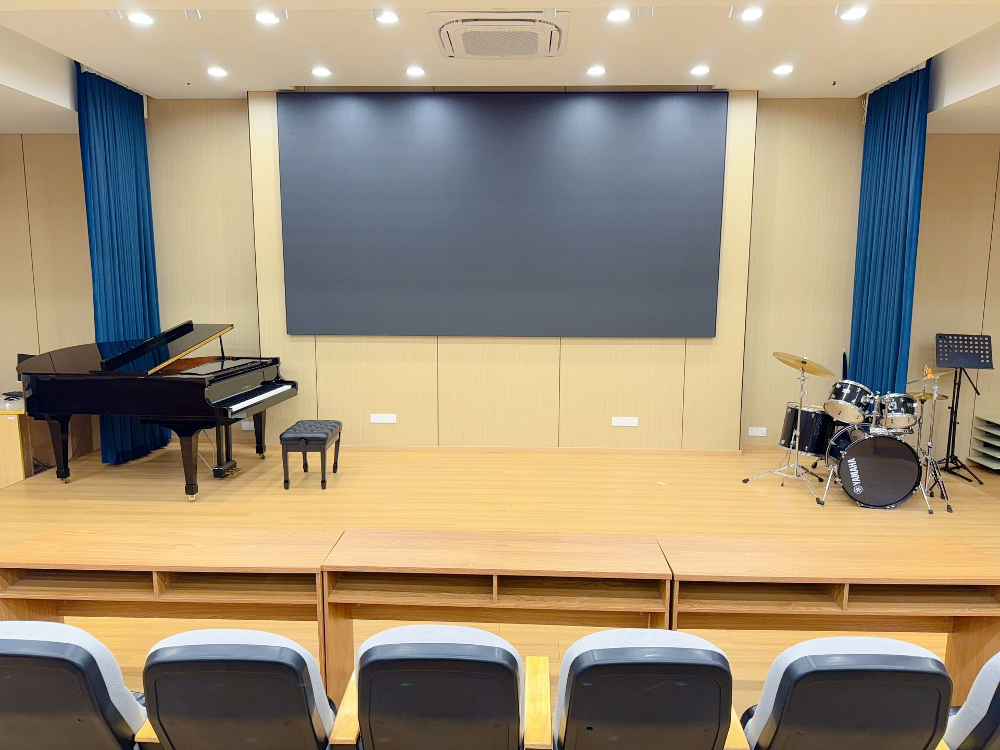
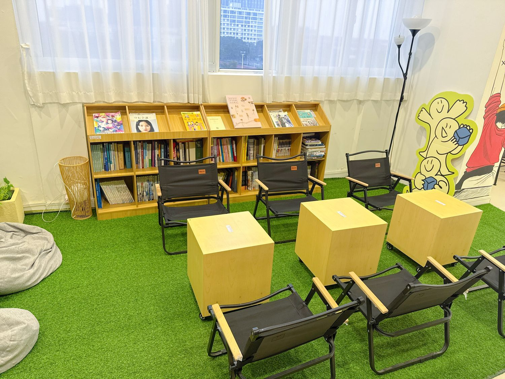
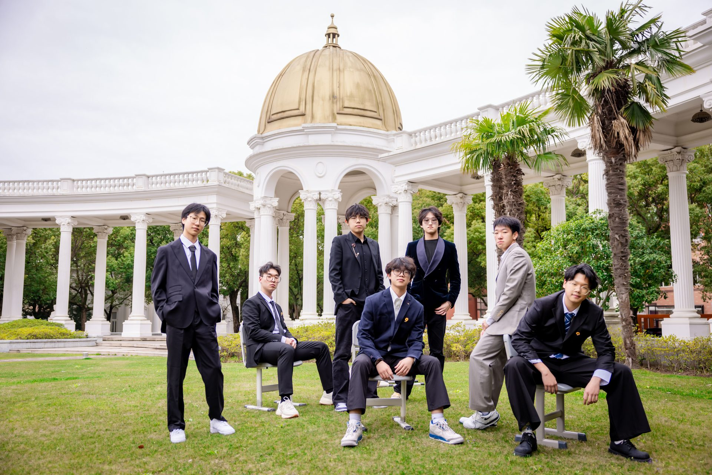

International Pathways, Designed Around the Student
An American high school program, the Korea Pathway, and the HMT Joint Examination class — one school, three doors to university.
Curriculum System
Focused on International Education
Boya anchors its English-site offering on an American high school program (Grades 10–12), complemented by the Japan Division’s art and music tracks, the established Korea Pathway, and the Joint Examination class for students from Hong Kong, Macao and Taiwan. The school additionally operates domestic Gaokao tracks, which are introduced separately on the Chinese website.
01
US Pathway Program — American High School Curriculum
Boya offers an American high school curriculum for Grades 10–12. Students complete a 21-credit program across English Language Arts, mathematics, laboratory sciences, social studies and English Language Development, capped by a supervised Senior Project, and follow an individual course plan based on entry level, accepted prior study and academic goals.
Graduation requires 21 earned credits — including the Senior Project — with a cumulative GPA of at least 2.0 and regular attendance. Official transcripts are issued by the academic records office of Boya International Academy; the full graduation requirements, course catalog, grading scale and a transcript specimen are published on our Academic Information page.
From Grade 10 onward, every student receives one-on-one university counseling: course selection, standardized-test planning (TOEFL, SAT), activity development and end-to-end application support, so that each graduate can present a coherent, competitive profile to universities in the United States and other English-speaking destinations.
Boya’s Japan Division runs a Japanese-medium pathway with two specialization tracks — fine art and music — in strategic partnership with a leading Japanese art-education institute. In a dual-teacher model, Tokyo-based art instructors teach inside Boya classrooms and join each student’s study planning from enrollment onward.
AJapan Art Class
A modular curriculum — visualized sketching (L1–L10), PBL creative projects, portfolio development and art appreciation — supported by teachers holding degrees from Tama Art University, Musashino Art University, Kyoto Seika University and Kyoto University of the Arts. In 2025, Boya students won 8 Gold and 8 Silver awards at the Prix Tour Eiffel (Louvre International Art Exhibition); the division is an official partner of the Busan International Art Festival.
BJapan Music Class
A three-module curriculum — musicianship (theory, sight-singing, ear training), creation & practice (composition, production, recording, performance), and portfolio development — backed by 40 professional piano rooms and an in-house recording studio. Japanese professors lead masterclasses and mock auditions on campus.
Admission to Japanese universities is subject to each university’s own examinations and requirements; program details are confirmed with families at enrollment.

03
Art & Music Program — English Track
An English-medium art and music program combining senior-high study with articulated undergraduate pathways toward Singapore, Europe, the United States, Japan and Korea. Art students train in dedicated studios — fashion, ceramics, woodworking, photography and digital media — within a modular curriculum designed for both technical skill and creative growth.
Music students work with 40 professional piano rooms and an in-house recording studio, covering musicianship, composition and production, vocal and instrumental performance, and stage training. The program maintains an active competition calendar — including the Cambridge youth arts events, the Busan International Art Festival and the Sakura awards — with coaching from creation to submission.

04
Joint Entrance Examination (JEE) Class — Hong Kong, Macao & Taiwan
This preparatory class is designed for students holding residency status in Hong Kong, Macao or Taiwan. The program strictly follows the national Joint Entrance Examination syllabus, with an experienced faculty providing systematic instruction on core test points, intensive practice with past examination papers, and tiered, individualized tutoring.
The curriculum balances foundational liberal arts and sciences with the development of arts and sports specialties. Personalized academic planning and application guidance accompany students throughout the preparatory journey, supporting them in competing for admission to prestigious higher education institutions in mainland China.
Signature Program · 05
Korea Pathway Program
Boya International Academy has established official cooperation with prestigious Korean universities — Yonsei University and Pukyong National University — building a stable, well-supported undergraduate pathway for its students. All partner degrees are recognized by the Chinese Ministry of Education.

How the Pathway Works
The program integrates Korean language, Korean culture and the standard high-school curriculum, delivered through a collaborative teaching model featuring both Chinese and Korean instructors. Students who pass the school’s internal comprehensive assessment and meet Korean language proficiency requirements are eligible for admission consideration by partner universities — without additional overseas entrance examinations.
One-stop support covers academic planning, visa processing and on-site guidance abroad. Graduates may benefit from policies for returning students, such as household registration, civil service eligibility and employment with multinational corporations.
AFull High-School Curriculum
Mathematics, physics and chemistry courses that carry the foundations of university majors.
BImmersive Korean Environment
Bilingual classrooms taught by Chinese and Korean teachers, accelerating Korean proficiency from day one.
CA Rich Arts & Club Scene
Performance, dance and music societies supporting all-round aesthetic development.
DKorean Etiquette & Culture
Dedicated courses that prepare students to adapt quickly to undergraduate life in Korea.
Featured Course
Yonsei Korean Language Institute Courses
The Yonsei Korean Language Institute course is the Institute’s official curriculum, and the designated Korean course of the joint pre-admission training program with Yonsei’s arts college. It follows a dual-teacher model: online lectures by the Institute’s own Korean-language faculty, with on-campus Korean teachers providing in-person support.
Built on Yonsei University’s official curriculum framework and benchmarked to the standards of its home campus, the course lets students learn from professional Korean instructors without leaving Shanghai.
Partner Universities
Our Partners in Korea
QS World 2026#50
Yonsei University
Est. 1885 · SKY League · Private
A member of Korea’s elite SKY trio and the first Korean private university to enter the global top 50. Renowned for medicine, business, media studies and engineering across its Sinchon, Songdo and Wonju campuses.
National UniversityBusan
Pukyong National University
Public · Busan Metropolitan City
A leading public comprehensive university in Busan with distinguished strengths in engineering and art & design — a high-quality public option within the pathway.
Partnership scope: the Yonsei University cooperation is signed with the College of Art (Mirae Campus), valid June 2026 – June 2027, covering pre-admission for art programs; the Pukyong National University cooperation is signed with the university itself on a permanent basis, under which students holding TOPIK Level 3 may enter first-year undergraduate study. A note on admission: admission eligibility under this pathway is conditional on the school’s internal comprehensive assessment and Korean language proficiency requirements. Final admission decisions are made by each partner university in accordance with its own policies for the applicable year. Degree recognition follows the official records of the Chinese Ministry of Education.
47
University offers received
80%
Admitted to QS World Top 100 universities
2
Partner universities in Korea, incl. SKY member Yonsei
105,200RMB
Scholarships awarded to the cohort
Class of 2026: 51 international-track graduates received 47 university offers (one per student); 80% of admitted students entered QS World Top 100 universities; 18 students were awarded scholarships totaling RMB 105,200. As reported by the school’s admissions office, September 2026.
Academic Information
Requirements, Catalog, Grading & Records
Graduation requirements, the three-year course catalog, the grading scale and GPA rules, and a blank transcript specimen for the US pathway — published in full, and updated each academic year.